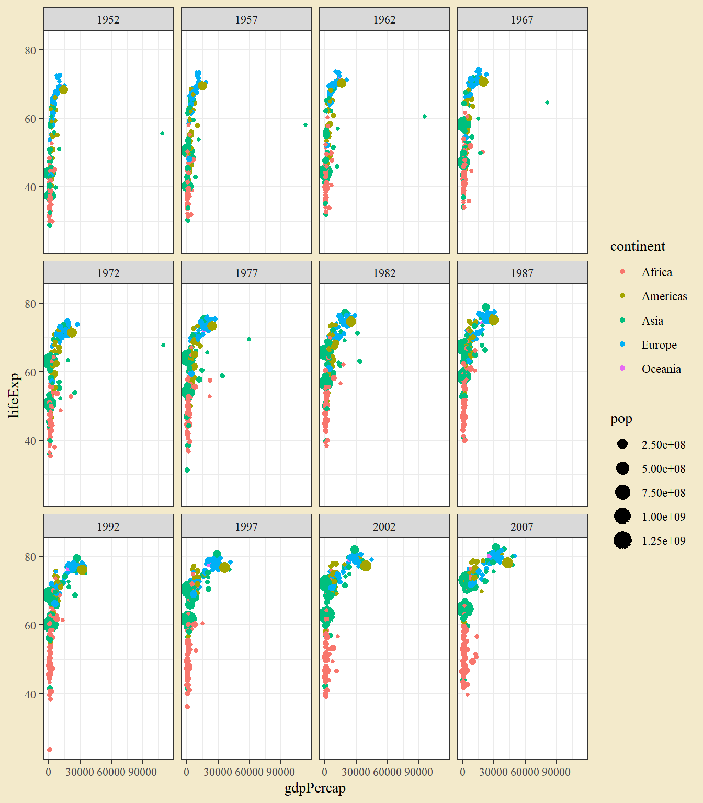
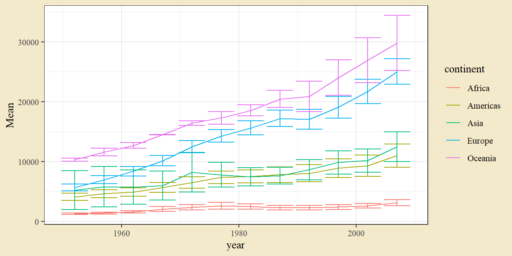
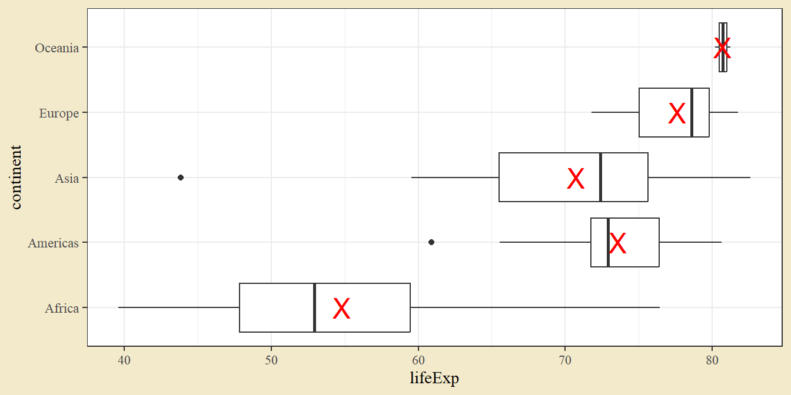
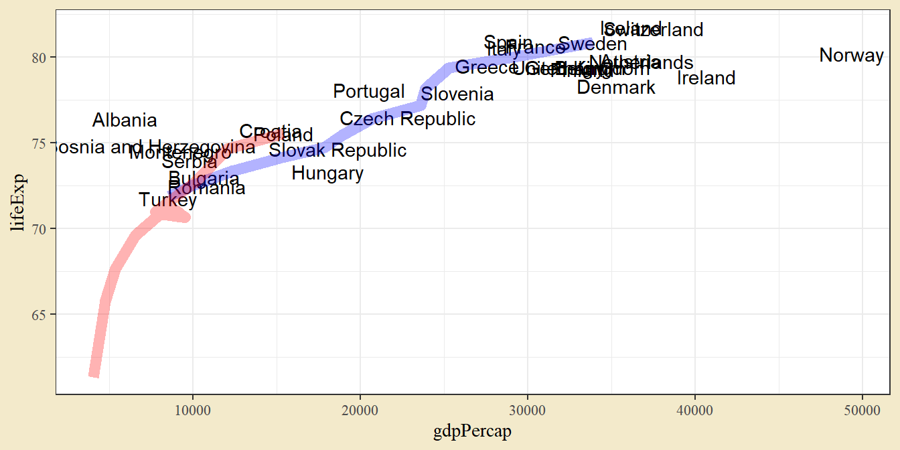
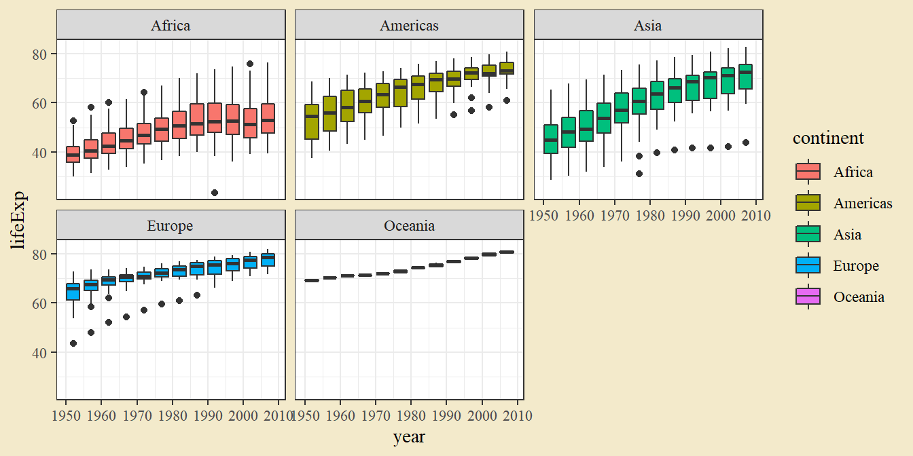

Kapitel 6 Sannolikhetsfördelningar och slumptal
6.1 Fördelningar
R kommer med en stor mängd funktioner för att beräkna sannolikheter ur kända sannolikhetsfördelningar såsom binomial- och normalfördelningen. För en lista på fördelningar täckta av grundpaketen i R kan man köra ?distributions.
För en kontinuerlig likformig fördelning gäller att alla utfall mellan 0 och 1 är lika sannolika. Som exempel kan man tänka sig att man stoppar ett tidtagarur vid ett slumpmässigt tillfälle och tittar på utfallets decimaler - de kommer ge ett värde mellan 0 och 1 och det finns ingen anledning att tro att vissa värden är mer sannolika än andra. Täthetsfunktionen \(f(x)\) kan beräknas genom \(dunif\), där d står för density (täthet) och unif anger en uniform fördelning. Fördelningens täthetsfunktion är 0 för värden på \(x\) under 0 eller över 1, och däremellan är täthetsfunktionen 1.
dunif(-0.1)## [1] 0dunif(0.1)## [1] 1dunif(1.1)## [1] 0Fördelningsfunktionen anger sannolikheten för ett värde mindre än \(x\), \(F(x) = P(X \leq x)\) och kan i R beräknas genom funktionen \(punif\), där p står för probability.
punif(-0.1)## [1] 0punif(0.1)## [1] 0.1punif(1.1)## [1] 1Fördelningsfunktionen för en likformig fördelning är för värden på \(x\) under 0, 1 för värden på \(x\) över 1, och däremellan lika med \(x\).
Täthetsfunktion och fördelningsfunktion kan illustreras med grafer. Funktionen seq används för att skapa en sekvens från ett värde till ett annat värde. Paketet patchwork används för att kombinera två grafer. Funktionen tibble används för att skapa ett tibble-objekt - funktionen fungerar likt data.frame i att kolumner anges som namn = kolumnvärden.
g1 <- tibble(x = seq(from = -0.5, to = 1.5, by = 0.01),
f = dunif(x)) %>%
ggplot(aes(x, f)) +
geom_line() +
labs(title = "Täthetsfunktion, f(x)")
g2 <- tibble(x = seq(from = -0.5, to = 1.5, by = 0.01),
F = punif(x)) %>%
ggplot(aes(x, F)) +
geom_line() +
labs(title = "Fördelningsfunktion, F(x)")
library(patchwork)
g1 + g2
Motsvarande funktioner för en normalfördelning ges av dnorm och pnorm. Medelvärde och standardavvikelse kan sättas genom argumenten mean och sd. Här ges ett exempel på en normalfördelning med medelvärdet 50 och standardavvikelse 3.
g1 <- tibble(x = seq(from = 40, to = 60, by = 0.1),
f = dnorm(x, mean = 50, sd = 3)) %>%
ggplot(aes(x, f)) +
geom_line() +
labs(title = "Täthetsfunktion, f(x)")
g2 <- tibble(x = seq(from = 40, to = 60, by = 0.1),
F = pnorm(x, mean = 50, sd = 3)) %>%
ggplot(aes(x, F)) +
geom_line() +
labs(title = "Fördelningsfunktion, F(x)")
g1 + g2
Fördelningsfunktionen anger sannolikheten att ett utfall ligger under värdet \(x\). Om man vill beräkna det omvända fallet - ett x-värde sådant att sannolikheten att ligga under det värdet är en viss sannolikhet \(p\) - använder man kvantilfunktionen. Som exempel beräknas ett värde på x-axeln sådant att en fjärdedel ligger under det värdet i en normalfördelning med \(\mu = 50\) och \(\sigma = 3\).
qnorm(0.25, mean = 50, sd = 3)## [1] 47.97653Sannolikhetsfunktion och fördelningsfunktion kan även beräknas för diskreta fördelningar. Binomialfördelningen ges till exempel av dbinom och pbinom med argumenten size för parametern \(n\) och prob för parametern \(p\). Här ges ett exempel på en binomialfördelning med \(n = 20\) och \(p = 0.7\). Eftersom en diskret fördelning oftast illustreras med stapeldiagram ersätts geom_line() med geom_bar(stat = "identity").
g1 <- tibble(x = 0:20,
f = dbinom(x, size = 20, prob = 0.7)) %>%
ggplot(aes(x, f)) +
geom_bar(stat = "identity") +
labs(title = "Sannolikhetsfunktion, f(x)")
g2 <- tibble(x = 0:20,
F = pbinom(x, size = 20, prob = 0.7)) %>%
ggplot(aes(x, F)) +
geom_bar(stat = "identity") +
labs(title = "Fördelningsfunktion, F(x)")
g1 + g2
Utöver sannolikhetsberäkningar har R funktioner för att skapa slumptal från en angiven fördelning. Dessa anges genom bokstaven r (för random) följt av fördelningens namn, t.ex. rnorm för normalfördelningen och rbinom för binomialfördelningen. I exemplet nedan dras tiotusen observationer från en normalfördelning. Histogrammet visar att slumptalen ungefär följer den teoretiska fördelningen (här utritad med funktionen stat_function).
dat <- tibble(x = rnorm(10000, mean = 50, sd = 3))
ggplot(dat, aes(x)) +
geom_histogram(aes(y =..density..)) +
stat_function(fun = dnorm, args = list(mean = 50, sd = 3),
col = "red", size = 1)
Argumentet y = ..density.. anger att y-axeln ska vara i andelar, istället för antal.
6.2 Egna funktioner
Det är möjligt att definera egna funktioner genom konstruktionsfunktionen function. Ett enkelt exempel på en funktion som tar ett värde och ger det värdet plus 4:
add_four <- function(x){
y <- x + 4
y
}
add_four(5)## [1] 9Här är add_four namnet på den funktion som skapas och function(x) anger att man skapar en funktion med ett ingångsvärde x. Stycket inom {...} är själva funktionsberäkning. I det här fallet skapar funktionen ett objekt y som ges av x plus 4, och därefter skrivs resultatet ut. Det som skrivs ut i funktionens sista rad blir funktionens output.
Funktioner kan ha mer än ett ingående värde, t.ex.
add_two_numbers <- function(x, y){
res <- x + y
res
}
add_two_numbers(15, 3)## [1] 18Ett ingångsvärde kan ges ett grundläge genom att ange det som ett argument i funktionen, t.ex.
add_two_numbers <- function(x, y = 3){
res <- x + y
res
}
add_two_numbers(15)## [1] 18add_two_numbers(15, 12)## [1] 27Om inget värde anges för det andra ingåendevärdet (y) sätts det värdet till 3, eftersom det anges i definitionen av funktionen.
6.3 Simuleringar
Med hjälp av egna funktioner och slumptal kan man utforska många grundläggande statistiska resultat. Teoretiska resultat säger till exempel att om en slumpvariabel \(X\) har standardavvikelsen \(\sigma\), så har ett medelvärde av \(n\) observationer av \(X\) standardavvikelsen \(\sigma / \sqrt n\). För att undersöka detta skapas en funktion som för ett angivet värde på \(n\) ger ett medelvärde av \(n\) slumptal.
mean_of_n_obs <- function(n = 1){
x <- rnorm(n, mean = 0, sd = 1)
mean(x)
}Funktionen tar ingångsvärdet n, simulerar n stycken slumptal från en normalfördelning med medelvärde 0 och standardavvikelse 1, och ger ut medelvärdet av de slumptalen.
Funktionen replicate kan användas för att köra en funktion upprepade gånger - replicate(100, mean_of_n_obs(n = 10)) upprepar den definerade funktionen 100 gånger och ger alltså 100 stycken medelvärden där varje medelvärde beräknas från 10 observationer.
Eftersom standardavvikelsen i den ursprungliga dragningen var 1 (\(\sigma = 1\)) bör standardavvikelsen i ett medelvärde av 16 observationer vara 0.25 (\(\sigma / \sqrt{16} = 1 / 4 = 0.25\)). Det testas genom att beräkna tiotusen medelvärden (genom replicate) och beräkna standardavvikelsen i den serien av medelvärden.
means <- replicate(10000, mean_of_n_obs(n = 16))
sd(means)## [1] 0.2490357Detta kan uppepas för andra stickprovsstorlekar - ett stickprov om hundra observationer bör ge ett värde kring 0.1 (eftersom \(\sigma / \sqrt{100} = 1 / 10 = 0.1\)).
means <- replicate(10000, mean_of_n_obs(n = 100))
sd(means)## [1] 0.1005043Sannolikhetsteorin viktigaste resultat är centrala gränsvärdesatsen, som säger att medelvärden av flera lika slumpvariabler är ungefärligt normalfördelade även om den ursprungliga slumpvariabeln inte är det. Detta kan illustreras genom att dra slumptal från valfri fördelning, beräkna medelvärden av de slumptalen, och sedan titta på fördelningen för de medelvärdena. Ett första steg kan vara att skriva en funktion som drar slumptal och beräknar ett medelvärde.
draw_random_calculate_mean <- function(){
x <- runif(10)
mean(x)
}Den ursprungliga fördelningen är här en likformig fördelning och stickprovsstorleken är 10.
Funktionen replicate används för att dra tiotusen medelvärden och ggplot används för att skapa ett histogram över medelvärdena.
means <- tibble(x = replicate(10000, draw_random_calculate_mean()))
ggplot(means, aes(x)) +
geom_histogram(bins = 60)
Medelvärdena följer en ungefärlig normalfördelning trots att den ursprungliga variabeln följer en likformig fördelning.
6.4 Övningar
Övning 6.1 (Binomial grobarhet) I ett försöks sätts 10 frön med en grobarhetssannolikhet om 60 procent. Antal frön som gror följer då en binomialfördelning med \(N = 10\) och \(p = 0.6\), vilket kan skrivas \(X \sim Bin(10, 0.6)\).
a. Vad är sannolikheten att få exakt 6 groende frön, \(P(X = 6)\)?
b. Vad är sannolikheten att få högst 6 groende frön, \(P(X \leq 6)\)?
c. Beräkna slumpvariabelns fördelningsfunktion.
d. Illustrera sannolikheterna från (c).
Ledning: dbinom och pbinom kan beräkna sannolikheter från en binomialfördelning.
Lösningsförslag 6.1 (Binomial grobarhet) Uppgiften kan lösas genom att ta fram sannolikheter med dbinom och pbinom med argumenten size = 10 för tio frön och prob = 0.6 för en grobarhet på 0.6
a.
dbinom(x = 6, size = 10, prob = 0.6)## [1] 0.2508227b.
pbinom(6, size = 10, prob = 0.6)## [1] 0.6177194c.
tibble(x = 0:10,
Fördelningsfunktion = pbinom(x, size = 10, prob = 0.6))## # A tibble: 11 × 2
## x Fördelningsfunktion
## <int> <dbl>
## 1 0 0.000105
## 2 1 0.00168
## 3 2 0.0123
## 4 3 0.0548
## 5 4 0.166
## 6 5 0.367
## 7 6 0.618
## 8 7 0.833
## 9 8 0.954
## 10 9 0.994
## 11 10 1d.
dat <- tibble(x = 0:10,
Fördelningsfunktion = pbinom(x, size = 10, prob = 0.6),
Sannolikhetsfunktion = dbinom(x, size = 10, prob = 0.6))
ggplot(dat, aes(x)) +
geom_bar(aes(y = Fördelningsfunktion), stat = "identity",
fill = "pink", col = "hotpink", width = 0.5) +
geom_segment(aes(x = x, xend = x,
y = Sannolikhetsfunktion, yend = 0)) +
scale_x_continuous(breaks = 0:10) +
theme(panel.background = element_rect(fill = "purple"),
panel.grid = element_blank())
Illustration av fördelningsfunktionen (som breda staplar) med sannolikhetsfunktionen inritad som smala streck. Exempel på argument för val av färger för geom och tema. Sannolikheten i (a) (exakt 6 groende frön) ges av det svarta strecket vid 6 och sannolikheten i (b) (högst 6 groende frön) ges av den breda stapeln vid 6.
Övning 6.2 (Poissonfördelad klöver) Antalet fyrklöver på en slumpmässigt vald kvadratmeter från en gräsmatta är poissonfördelad med väntevärde 1 per \(m^2\).
a. Hur stor är sannolikheten att en slumpmässigt vald \(m^2\) innehåller minst en fyrklöver, \(P(X \geq 1)\)? Exakt en fyrklöver, \(P(X = 1)\)?
b. Hur stor är sannolikheten att en slumpmässigt vald yta om 10 kvadratmeter innehåller exakt 10 fyrklöver?
Ledning: Summan av n stycken likadana poissonfördelade variabler är en poissonfördelad variabel med väntevärde givet av n gånger väntevärdet för den enskilda variabeln.
(Från Olsson, Biometri.)
Lösningsförslag 6.2 (Poissonfördelad klöver) Sannolikheter för en poissonfördelning kan tas fram med dpois för sannolikhetsfunktionen eller ppois för fördelningsfunktionen.
a. Antal klöver på en kvadratmeter följer en poissonfördelning med \(\lambda = 1\). Sannolikheten för minst en fyrklöver kan beräknas genom ett minus sannolikheten för noll fyrklöver (utfallet noll fyrklöver är ett komplement till utfallet en eller fler fyrklöver).
# P(X >= 1) = 1 - P(X <= 0)
1 - ppois(0, lambda = 1)## [1] 0.6321206# P(X = 1)
dpois(1, lambda = 1)## [1] 0.3678794b. Summan av poissonfördelade variabler är poissonfördelad med parametern \(\lambda\) given av summan av de ursprungliga variablernas parametervärden. Tio kvadratmeter kan ses som summan av tio stycken observationer av en kvadratmeter. Antal klöver på tio kvadratmeter bör därmed följa en poissonfördelning med \(\lambda = 10\).
# Y ~ Po(lambda = 10)
dpois(10, lambda = 10)## [1] 0.12511Ungefär \(12.5\) procent.
Övning 6.3 (Sannolikheter från en normalfördelning) Slumpvariabeln \(X\) är normalfördelad med medelvärde \(2\) och varians \(9\). Beräkna följande
a. \(P(X > 2.75)\)
b. \(P(X \leq 2.75)\)
c. \(P(X > 2.50)\)
d. \(P(2.30 < X < 2.45)\)
e. \(P(X > -0.02)\)
f. \(P(-0.02 < X < 1.80)\)
g. Bestäm värdet på x som uppfyller att \(P(X < x) = F(x) = 0.95\).
(Från Olsson, Biometri. Samma som instuderingsuppgift 22.)
Lösningsförslag 6.3 (Sannolikheter från en normalfördelning) Sannolikheter från normalfördelningen kan tas fram med pnorm.
a. Notera att variansen \(\sigma^2\) är \(9\) och att standardavvikelsen \(\sigma\) därmed är \(3\). Funktionen pnorm ger sannolikheten att ligga under ett givet x-värde. För att beräkna \(P(X > 2.75)\) kan ta ett minus \(P(X < 2.75)\).
1 - pnorm(2.75, mean = 2, sd = 3)## [1] 0.4012937b. Direkt tillämpning av pnorm.
pnorm(2.75, 2, 3)## [1] 0.5987063c. Likt (a).
1 - pnorm(2.5, 2, 3)## [1] 0.4338162d. För att beräkna sannolikheten att ligga mellan två värden kan man ta skillnaden mellan två värden framräknade med pnorm.
pnorm(2.45, 2, 3) - pnorm(2.30, 2, 3)## [1] 0.01978986Om man vill illustrera en sannolikhet från en normalfördelning kan man beräkna normalfördelningskurvan med dnorm och sedan färglägga en sektion genom ett geom_ribbon på filtrerad data. Exempel för (d).
dat <- tibble(x = seq(-7, 11, 0.01),
Täthetsfunktion = dnorm(x, 2, 3))
ggplot(dat, aes(x, Täthetsfunktion)) +
geom_line() +
geom_ribbon(aes(ymax = Täthetsfunktion, ymin = 0),
data = dat %>% filter(x > 2.30 & x < 2.45),
fill = "turquoise")
Den turkosa ytan motsvarar sannolikheten att \(X\) ger ett utfall mellan \(2.30\) och \(2.45\), sannolikheten uträknad i (d).
e.
1 - pnorm(-0.02, 2, 3)## [1] 0.7496324f.
pnorm(1.8, 2, 3) - pnorm(-0.02, 2, 3)## [1] 0.2230559g. Det sökta värdet är kvantil \(0.95\), ett värde sådant att 95 procent ligger under det värdet. Med en normalfördelning med medelvärde 2 och standardavvikelse 3 kan det tas fram med följande.
qnorm(0.95, 2, 3) # 2 och 3 anger medel 2 och standardavvikelse 3## [1] 6.934561Tolkningen är att i en normal \(N(\mu = 2, \sigma^2 = 9)\) ligger 95 procent av ytan under \(6.9346\).
En illustration kan skapas med en datatabell med värden från fördelningens täthetsfunktion och geom_ribbon.
dat <- tibble(x = seq(-7, 11, 0.01),
Täthetsfunktion = dnorm(x, 2, 3))
q_95 <- qnorm(0.95, 2, 3)
ggplot(dat, aes(x, Täthetsfunktion)) +
geom_line() +
geom_ribbon(aes(ymax = Täthetsfunktion, ymin = 0),
data = dat %>% filter(x < q_95),
fill = "turquoise", col = "black") +
scale_x_continuous(breaks = c(-5, 0, 5, round(q_95, 3)))
95 procent av ytan ligger under 6.935.
Övning 6.4 (Relativ frekvens) Säg att man kastar ett häftstift och att sannolikheten att stiftet stannar med spetsen upp är 0.66. Simulera tusen häftstiftskast och beräkna den relativa frekvensen häftstiften hamnat med spetsen uppåt. Den relativa frekvensen för en serie värden ges av antalet positiva utfall delat på antalet kast för varje kast. Den relativa frekvensen efter 35 kast är till exempel antalet positiva utfall bland de 35, delat på 35. Illustrera med ett linjediagram.
Ledning: tusen kast kan simuleras med rbin(1000, 1, 0.66), vilket skapar tusen slumptal från en binomialfördelning där \(n = 1\) och \(p = 0.67\).
Lösningsförslag 6.4 (Relativ frekvens) För att beräkna och illustrera den relativa frekvensen skapas en tibble där den första kolumnen anger antalet kast vid varje steg, det vill säga en kolumn som anger ett till tusen. Därefter dras tusen slumptal enligt ledningen ovan. Därefter beräknas den kumulativa summan - antalet positiva utfall upp till det kast som anges för raden. Och slutligen beräknas den relativa frekvensen genom att ta den kumulativa summan och dela med antalet kast.
dat <- tibble(Kast = 1:1000,
Utfall = rbinom(1000, 1, 0.67),
Antal_spets_upp = cumsum(Utfall),
Relativ_frekvens = Antal_spets_upp / Kast)
dat## # A tibble: 1,000 × 4
## Kast Utfall Antal_spets_upp Relativ_frekvens
## <int> <int> <int> <dbl>
## 1 1 1 1 1
## 2 2 0 1 0.5
## 3 3 1 2 0.667
## 4 4 1 3 0.75
## 5 5 1 4 0.8
## 6 6 1 5 0.833
## 7 7 1 6 0.857
## 8 8 0 6 0.75
## 9 9 1 7 0.778
## 10 10 1 8 0.8
## # … with 990 more rowsggplot(dat, aes(Kast, Relativ_frekvens)) +
geom_line() +
geom_hline(yintercept = 0.66, col = "red", alpha = 0.7) +
ylim(0,1)
Den relativa frekvensen stabiliseras efter ett par hundra kast.
Övning 6.5 (Jämförelse mellan binomial och poisson) Poissonfördelning kan ses som en approximation av en binomialfördelning när \(n\) är stort och \(p\) är litet. Poissonfördelningens parameter \(\lambda\) sätts vid approximation till binomialfördelningens populationsmedelvärde \(np\).
Ta som exempel en binomialfördelning men \(n = 10\) och \(p = 0.1\); dess väntevärde är \(10 \cdot 0.1 = 1\). Beräkna sannolikheter från binomialfördelningen och motsvarande poissonfördelning. Jämför utfallen och illustrera med en passande graf.
Lösningsförslag 6.5 (Jämförelse mellan binomial och poisson) Fördelningen för binomial och poisson kan tas fram med dbinom respektive dpois.
dat <- tibble(x = 0:10,
Binomial = dbinom(x, 10, 0.1),
Poisson = dpois(x, 1),
Differens = Binomial - Poisson)
dat %>% round(3)## # A tibble: 11 × 4
## x Binomial Poisson Differens
## <dbl> <dbl> <dbl> <dbl>
## 1 0 0.349 0.368 -0.019
## 2 1 0.387 0.368 0.02
## 3 2 0.194 0.184 0.01
## 4 3 0.057 0.061 -0.004
## 5 4 0.011 0.015 -0.004
## 6 5 0.001 0.003 -0.002
## 7 6 0 0.001 0
## 8 7 0 0 0
## 9 8 0 0 0
## 10 9 0 0 0
## 11 10 0 0 0ggplot(dat, aes(x)) +
geom_point(aes(y = Binomial), col = "red") +
geom_point(aes(y = Poisson), col = "green")
Fördelningarna är ganska lika. Relativt binomialen överskattar poissonfördelningen sannolikheten att få exakt 0 och överskattar sannolikheten att få exakt 1.
Övning 6.6 (Jämförelse mellan binomial och normal) En av många orsaker till att normalfördelningen förekommer i tillämpningar är att både binomialfördelningen och poissonfördelningen kan approximeras med en normalfördelning om populationsmedelvärdet är stort. För att se exempel på detta kan man jämföra en binomialfördelning med en normalfördelning. Skapa en graf för en binomialfördelning med n = 100 och p = 0.4 med en överliggande normalfördelning med samma populationsmedelvärde och -varians, dvs. populationsmedelvärdet \(\mu = np = 100 \cdot 0.4 = 40\) och populationsvariansen \(\sigma^2 = n\cdot p \cdot (1-p) = 100 \cdot 0.4 \cdot 0.6 = 24\).
Lösningsförslag 6.6 (Jämförelse mellan binomial och normal) Funktionerna dbinom och dnorm kan användas för att ta fram funktionsvärden från binomial- och normalfördelning. Dessa kan sedan plottas i en ggplot genom geom_segment för binomialen och geom_line för den kontinuerliga normalfördelningen.
dat_bin <- tibble(x = 0:100,
Snlh = dbinom(x, 100, 0.4))
dat_norm <- tibble(x = seq(0, 100, by = 0.1),
Snlh = dnorm(x, mean = 40, sd = sqrt(24)))
ggplot() +
geom_line(aes(x, Snlh), data = dat_norm, col = "blue") +
geom_segment(aes(x = x, xend = x, y = 0, yend =Snlh),
data = dat_bin, col = "red") 
Normalkurvan (blå kontinuerlig linje) följer binomalfördelningen (röda staplar). Man kan också jämföra specifika sannolikheter, till exempel
# Exakt 35 i binomialen
dbinom(35, 100, 0.4) # 0.0491## [1] 0.04913282# Mellan 34.5 och 35.5 i normalen
pnorm(35.5, 40, sqrt(24)) - pnorm(34.5, 40, sqrt(24)) # 0.0483## [1] 0.04837712Sannolikheten för exakt 35 i binomialen ligger nära sannolikheten för utfall mellan 34.5 och 35.5 i normalfördelningen.
Övning 6.7 (Log-normal fördelning) Ett exempel på en fördelning som är kontinuerlig, men inte normal, är en log-normal fördelning. En log-normal fördelning defineras av att den ger en normalfördelning efter att den logaritmeras - den är exponentialen av normalfördelningen. Dra 10000 slumptal från en log-normal fördelning (funktionen rlnorm) och illustrera med ett histogram. Ta logaritmen av datan och skapa histogrammet på nytt.
Lösningsförslag 6.7 (Log-normal fördelning) Funktionen rlnorm skapar slumptal från en log-normal fördelning. Två separata grafer plottar histogram över slumptalen och slumptalen efter log-transform.
dat <- tibble(Slumptal = rlnorm(10000))
g1 <- ggplot(dat, aes(Slumptal)) +
geom_histogram() +
ggtitle("Log-normal")
g2 <- ggplot(dat, aes(log(Slumptal))) +
geom_histogram() +
ggtitle("Log av log-normal")
library(patchwork)
g1 + g2
Övning 6.8 (Centrala gränsvärdesatsen) Centrala gränsvärdesatsen ger att summor (och medelvärden) av flera likadana slumpvariabler följer en ungefärlig normalfördelning. Skriv en funktion som drar 10 observation från en log-normal fördelning och beräknar ett medelvärde. Dra 10000 upprepningar från den fördelningen och se om medelvärdena följer en normalfördelning. Gör samma sak men skriv funktionen så att den drar 1000 observationer och tar ett medelvärde.
Se anvisningarna för ett liknande exempel. Observera att detta är en svårare uppgift.
Lösningsförslag 6.8 (Centrala gränsvärdesatsen) En funktion som tar medelvärdet av tio observation skapas. Tiotusen sådana medelvärden beräknas och dessa illustreras med ett histogram.
mean_of_ten <- function(){
x <- rlnorm(10)
mean(x)
}
means <- replicate(10000, mean_of_ten())
dat <- tibble(Mean_values = means)
ggplot(dat, aes(Mean_values)) +
geom_histogram(bins = 60)
Histogrammet visar en klar skevhet.
mean_of_thousand <- function(){
x <- rlnorm(1000)
mean(x)
}
means <- replicate(10000, mean_of_thousand())
dat <- tibble(Mean_values = means)
ggplot(dat, aes(Mean_values)) +
geom_histogram(bins = 60)
Histogrammet ligger närmare en typisk normalfördelning.
Övning 6.9 (Multiplicera med två eller addera två) I en övningsuppsgift väcks frågan om det finns någon skillnad mellan att ta utfallet av en slumpvariabel och multiplicera med två, och att addera två slumpvariabler. Ta som exempel tre slumpvariabler \(X_1, X_2, X_3\) och låt dem alla följa en binomialfördelning med \(n = 100\) och \(p = 0.8\). Dra 10000 slumptal från respektive fördelning, beräkna \(2 \cdot X_1\) och \(X_2 + X_3\) och illustrera dessa beräknade variabler. Beräkna också väntevärde och standardavvikelse från de beräknade variablerna.
Lösningsförslag 6.9 (Multiplicera med två eller addera två) Tre variabler med slumptal konstrueras med rbinom. Därefter skapas två nya variabler, en genom summan av två av slumpvariablerna och en som den tredje slumpvariabeln multiplicerad med 2.
dat <- tibble(X1 = rbinom(10000, size = 100, prob = 0.8),
X2 = rbinom(10000, size = 100, prob = 0.8),
X3 = rbinom(10000, size = 100, prob = 0.8)) %>%
mutate(Mult_by_2 = 2 * X1,
Sum_of_two = X2 + X3)
dat %>%
summarise_all(mean)## # A tibble: 1 × 5
## X1 X2 X3 Mult_by_2 Sum_of_two
## <dbl> <dbl> <dbl> <dbl> <dbl>
## 1 80.1 80.1 80.0 160. 160.dat %>%
summarise_all(sd)## # A tibble: 1 × 5
## X1 X2 X3 Mult_by_2 Sum_of_two
## <dbl> <dbl> <dbl> <dbl> <dbl>
## 1 4.01 3.98 3.99 8.03 5.63dat %>%
select(Mult_by_2, Sum_of_two) %>%
pivot_longer(1:2) %>%
ggplot(aes(value, fill = name)) +
geom_bar() +
facet_wrap(~ name)
Stapeldiagrammet för fallet med en variabel multiplicerad med två ger högre staplar och större spridning än stapeldiagrammet med två summerade variabler. Diagrammet visar också hur vissa utfall inte kan inträffa i fallet med multiplikation, eftersom bara jämna utfall kan inträffa. Intuitivt kan man förstå den mindre spridningen för två summerade variabler med att ovanligt låga eller höga värden ofta kommer kvittas ut mot ett vanligt värde.
Skillnaden märks också i beräkning av standardavvikelse. Den ursprungliga variabeln har en varians på \(np(1-p) = 100 \cdot 0.8 \cdot 0.2 = 16\) och därmed en standardavvikelse på\(\sqrt{16} = 4\). Multiplikation med två ger en slumpvariabel med den dubbla standardavvikelsen, alltså 8, medan addition av två likadana slumpvariabler ger en lägre standardavvikelse. För summor gäller att variansen av summan är summan av varianserna (detta antar dock oberoende slumpvariabler) - här fås alltså att variansen av summan är \(16+16=32\) och att standardavvikelsen är \(\sqrt{32} = 5.6569\). Värdet i datan kommer förstås avvika något från den teoretiska beräkningen, eftersom det är slumptal.